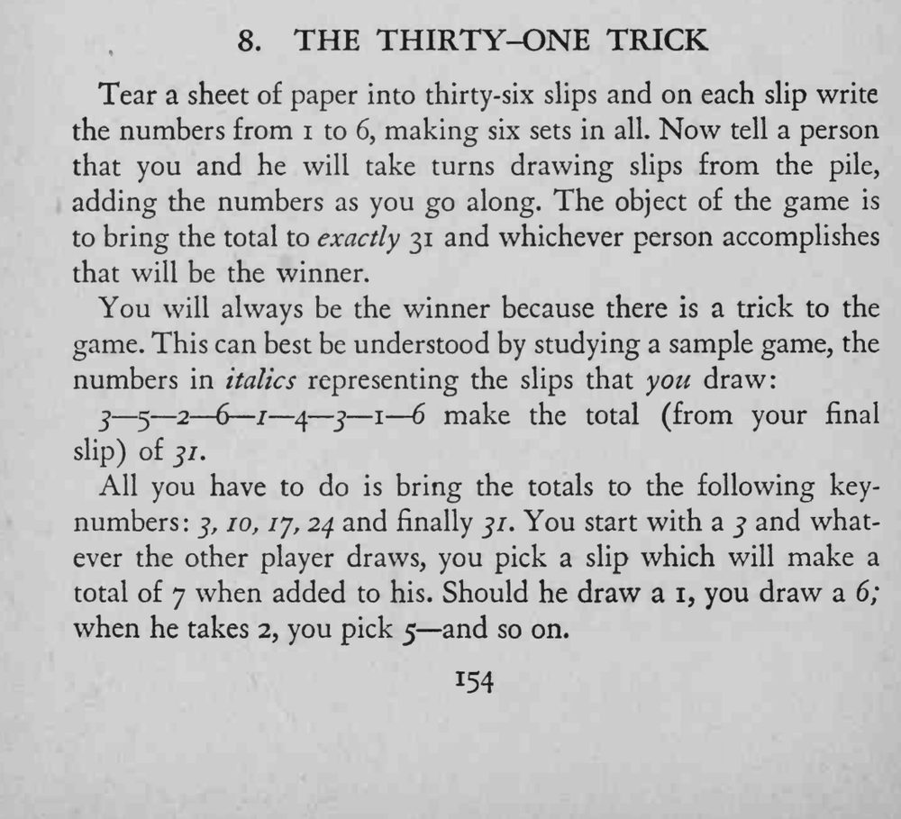
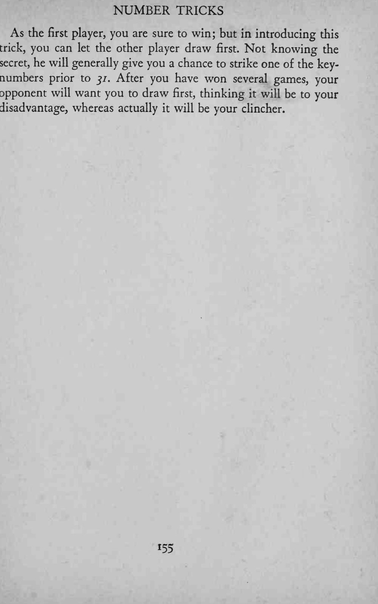
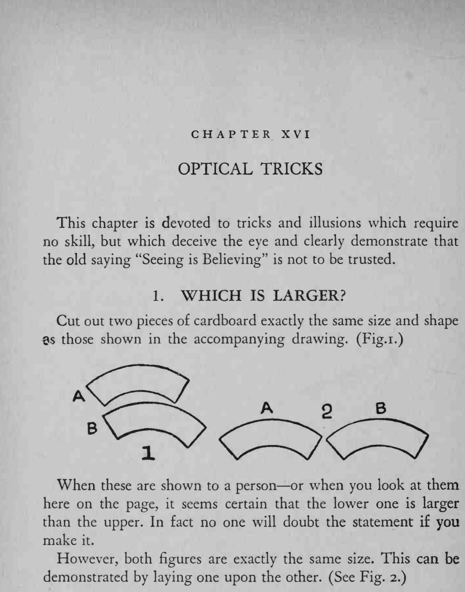

两人轮流从纸堆抽条累加数字，谁先把总数凑到 31 谁赢；魔术师却总能抢先到 31。
核心是凑 7 控总数，原文中间的关键数 OCR 略有残缺。



Tear a sheet of paper into thirty-six slips and on each slip write the numbers from 1 to 6, making six sets in all. Now tell a person that you and he will take turns drawing slips from the pile, adding the numbers as you go along. The object of the game is to bring the total to exactly 31 and whichever person accomplishes that will be the winner. You will always be the winner because there is a trick to the game. This can best be understood by studying a sample game, the numbers — in italics representing the slips that you draw: 3 — 5 2 6 — / — 4 — j — 1 6 make the total (from your final slip) of 3/. All you have to do is bring the totals to the following keynumbers 5, 10, 1 j, 24 and finally 31. You start with a 5 and whatever the other player draws, you pick a slip which will make a total of 7 when added to his. Should he draw a 1, you draw a 6; when he takes 2, you pick 5 and so on. As the first player, you are sure to win; but in introducing this trick, you can let the other player draw first. Not knowing the secret, he will generally give you a chance to strike one of the keynumbers prior to 31. After you have won several games, your opponent will want you to draw first, thinking it will be to your disadvantage, whereas actually it will be your clincher. This chapter is devoted to tricks and illusions which require no skill, but which deceive the eye and clearly demonstrate that the old saying "Seeing is Believing" is not to be trusted. Cut out two pieces of cardboard exactly the same size and shape 3s those shown in the accompanying drawing. (Fig.i.) When these are shown to a person or when you look at them here on the page, it seems certain that the lower one is larger than the upper. In fact no one will doubt the statement if you make However, both figures are exactly the same size. This can be demonstrated by laying one upon the other. (See Fig. 2.)